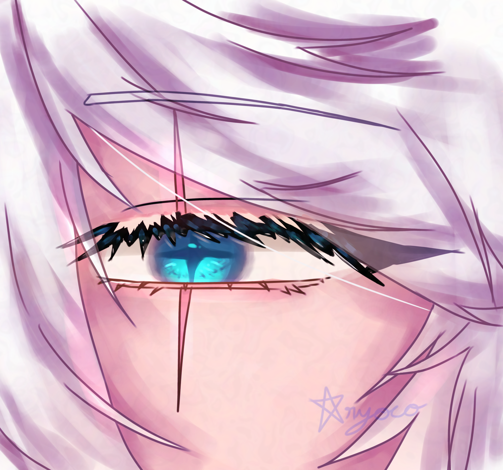
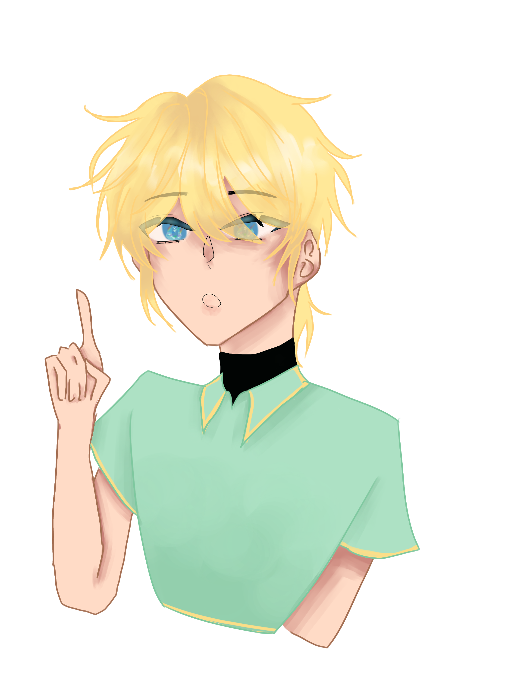
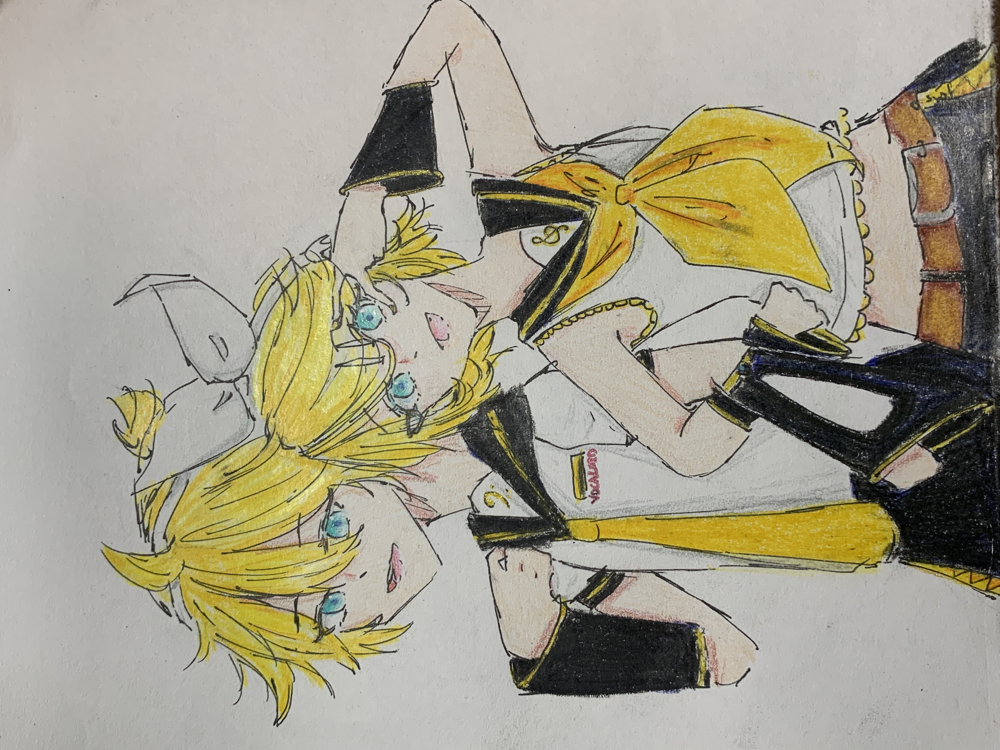
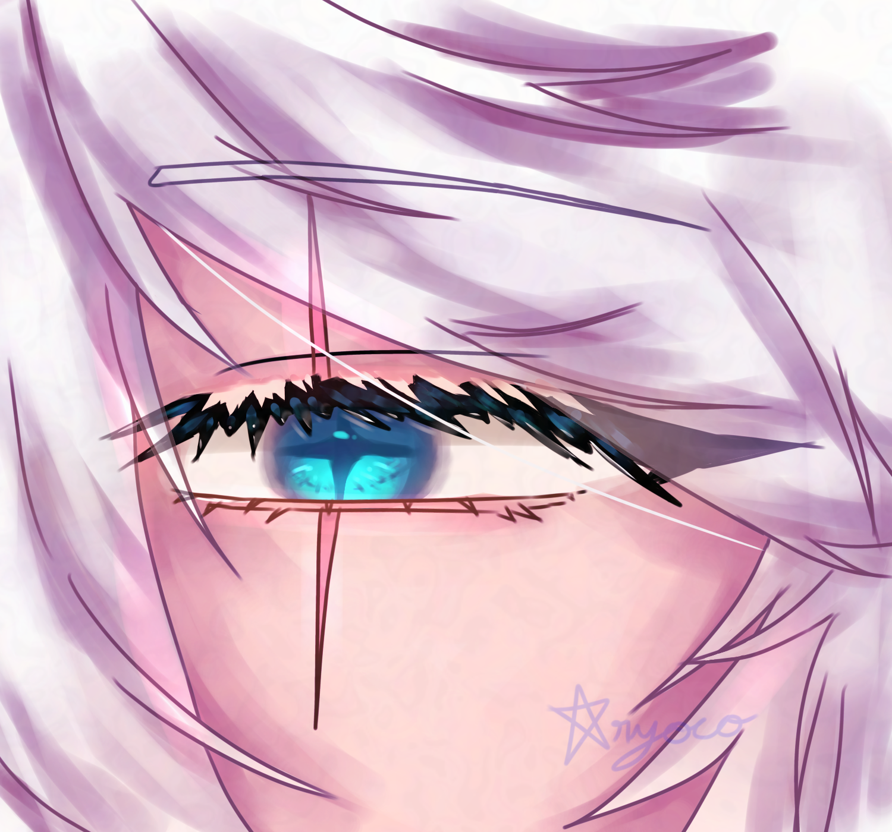
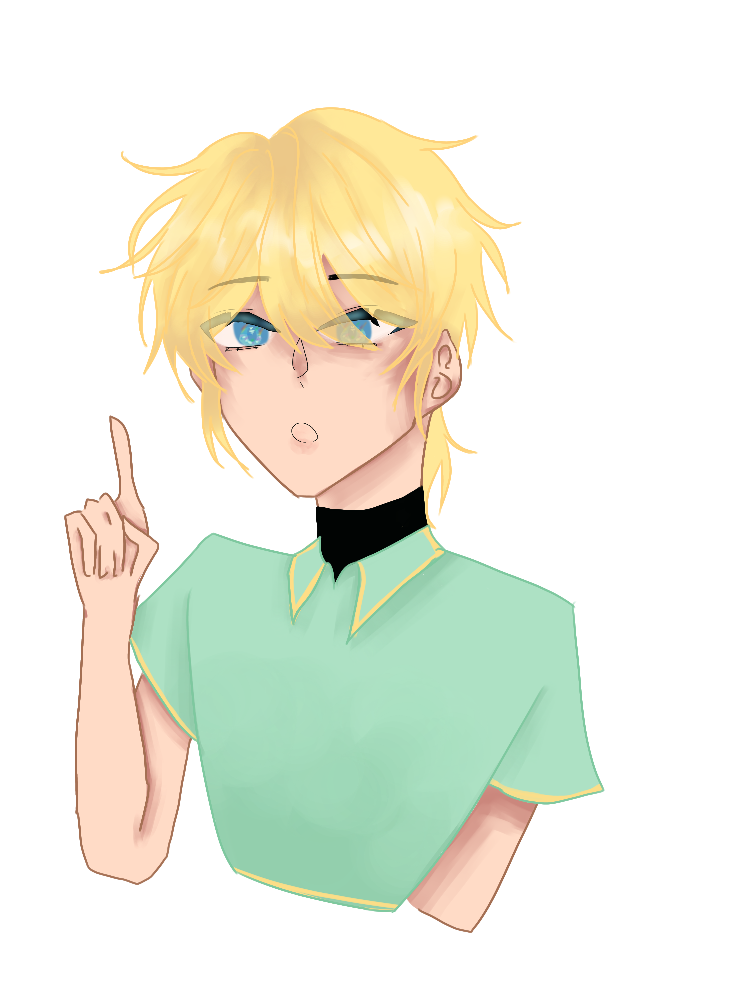
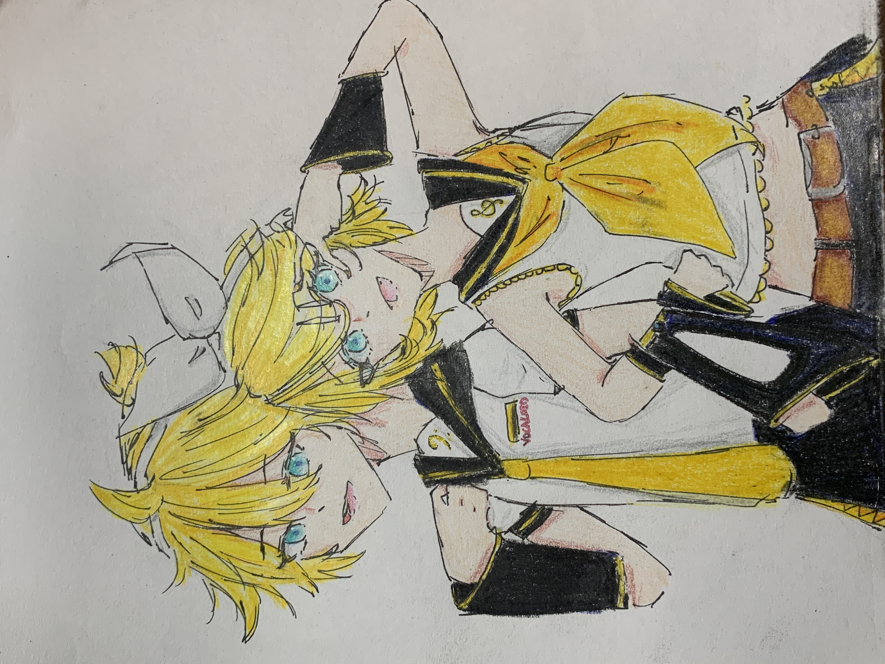

Back
I enjoy making
art, it's one of my hobbies.
Usually I draw on paper but sometimes I
do digital art, I also occasionally paint.
Art is something I have been interested in for a few years and I think
it's a calming hobby.
When I draw, I usually draw humans, this allows me to draw my favourite
characters from different medias.
 





Made by Haru!!!